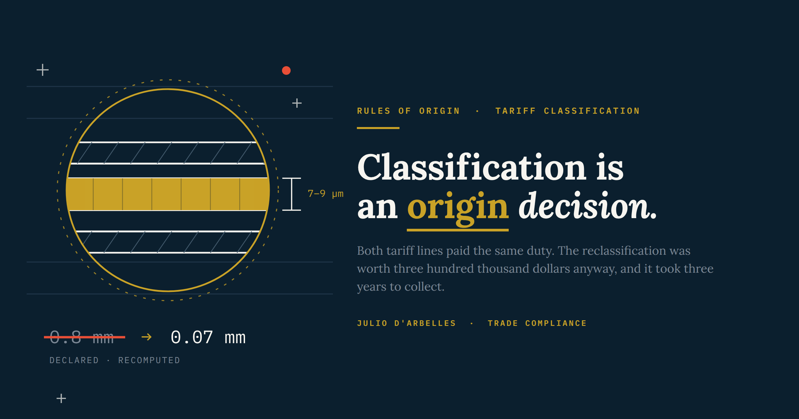
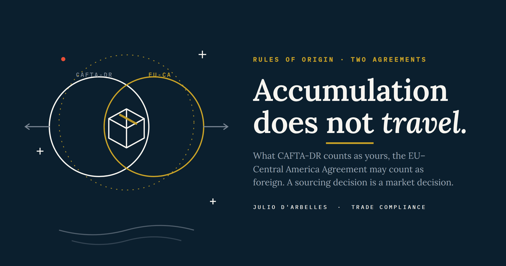

02Published Work

Both tariff lines paid ten percent. A plastics reduction programme swapped PET for aluminium in a coffee laminate, the classification moved from 3921.90 to 7607.20, and the goods inherited a rule of origin no converter could ever satisfy: a change of heading, from an input already sitting in the same heading. The record itself carried the block: a thickness wrong by a decimal place in all three rulings. Getting it fixed meant rewriting Annex 4.03 between two governments, and the vehicle was an HS transposition already on their calendar. Three years, and three hundred thousand dollars.
Read the full analysis →

The same plant, the same product, two agreements. CAFTA-DR counts the United States as family; the EU–Central America Association Agreement counts Panama in and the United States out. Accumulation earned under one treaty does not transfer to the other, the paper is not the same paper, and the hub that carries most of the region's cargo is a non-Party for one file and Party territory for the other. On sourcing as a market decision, EUR.1 versus self-certification, and the transshipment certificate that keeps Panama inside the preference.
Read the full analysis →

How Central American sugar actually enters the United States, why the CAFTA-DR preference is not the main door, and what a horizontal surcharge does to the entries a compliance team works hardest to qualify. In 2025 the region placed some 603,000 tonnes in the U.S. market; the CAFTA-DR quota covers roughly 150,000. Most of the sugar walks through the WTO tariff-rate quota instead, and the February 2026 Section 122 surcharge landed precisely on the low-duty entries the preference was supposed to protect.
Read the full analysis →

A milk-based ice cream carried 2.78% non-originating milk powder, comfortably under the limit, and a customs administration still stripped its origin. The 2006 SIECA ruling (MSC-04-04) settled how de minimis is actually calculated, and the same tolerance now runs under USMCA (Art. 4.12) and CAFTA-DR (Art. 4.6). This piece reads the mechanism, the dairy-sugar-coffee carve-outs, the valuation and transfer-pricing trap, the post-entry verification exposure, and the unfinished WTO harmonization behind non-preferential origin.
Read the full analysis →

One WTO provision, four readings. Article 8.1(c) decides whether a royalty enters the customs value, and the WCO, CBP, the Court of Justice of the EU and the Andean Community each frame the condition-of-sale test their own way — from Hasbro II and Sports Authority to GE Healthcare, 5th Avenue and Adidas Colombia. On the four conditions, where the royalty lives relative to the customs regime, the sell-in / sell-out design choice, and why the outcome is fixed at the drafting table, long before an audit begins.
Read the full analysis →

A finished good can fail one rule of origin and satisfy another on the same pallet. A single non-originating input can leave a product outside the Central American regime while CAFTA-DR accumulation still treats it as originating: same product, same bill of materials, two determinations. Why that is an instrument rather than a loophole, and why it only works when the person who reads the treaties is in the room from the first day.
Read the full analysis →

Annex II makes the origin rule for roasted and instant coffee binary: the green bean must be wholly obtained. The trade data shows Iberian roasters running on Vietnamese, Brazilian, and Colombian coffee. This piece reads the accumulation provisions, the missing fungibles mechanism, and the Article 30 verification exposure against SIECA and Eurostat trade flows.
Read the full analysis →
Advisory
Independent trade compliance consulting, available remotely.
Eighteen-plus years inside export-manufacturing and cross-border operations, now available to companies and counsel as an independent advisor. The practice covers customs valuation and audit defense, royalties and licence-fee structuring against Article 8.1(c), free trade agreement qualification and accumulation across CAFTA-DR, the EU–Central America Agreement and the regional regimes, suspensive customs regimes and their reconciliation, and AEO readiness under the WCO SAFE framework. Engagements begin with a conversation about the file you are looking at.